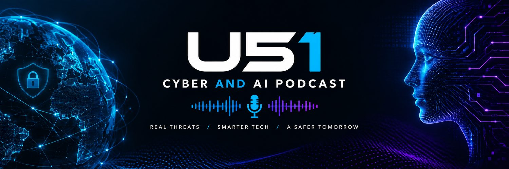

U51 Cyber and AI Security Pod
The daily cyber and AI threat brief, from Melbourne.
RSS feed
|
Follow on X (@u51cyber)
Spotify
Apple Podcasts
Pocket Casts
Episodes
Episode 5: Canva data incident, Bullhorn outage and plugin supply chain attacks, 20 October 2026
Episode 4: ConnectWise breach widens and OpenCode AI key theft, 19 October 2026
Episode 3: ConnectWise backup credential abuse and Drupal critical patches, 18 October 2026
Episode 2: BeyondTrust and Fortinet exploitation and spy ads on Australian networks, 17 October 2026
Episode 1: BeyondTrust zero-day and edge-device exploitation — 16 October 2026